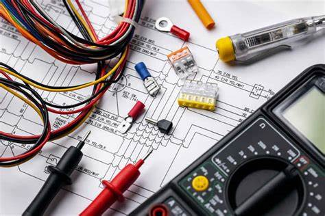

Perito Electronica
clases de electronica avanzadas.

Perito Dibujo Tecnico
clases para futuros arquitectos en nuestro Pais.
Perito en Informatica
clases avanzadas de programacion para futuros ingenieros en sitema o en sofware.